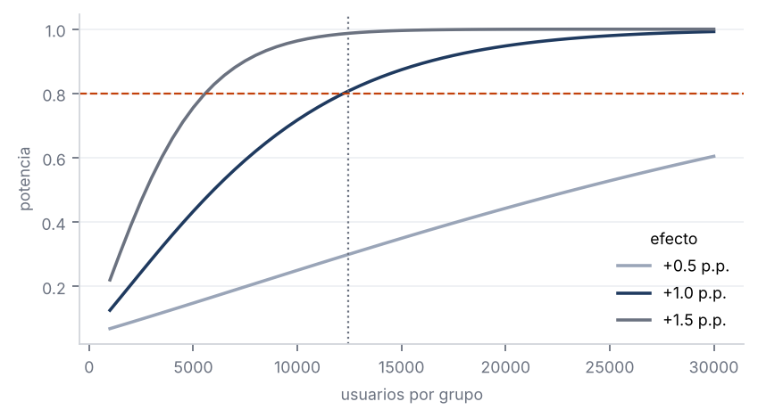
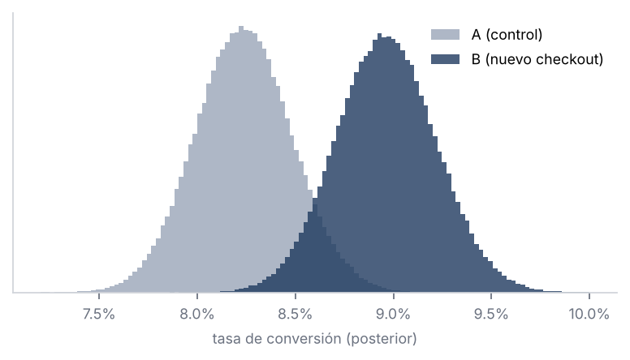
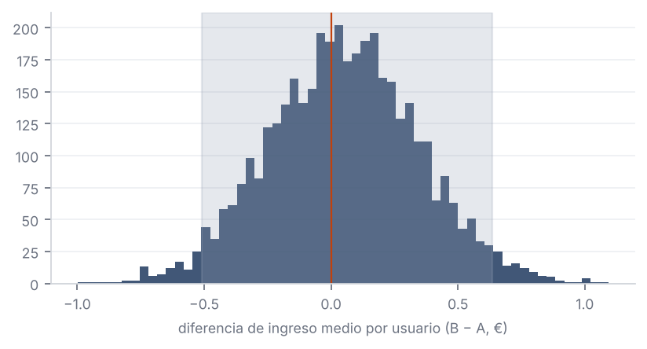
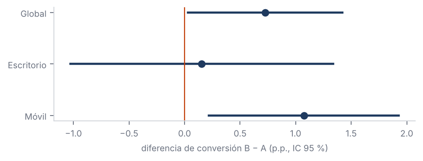
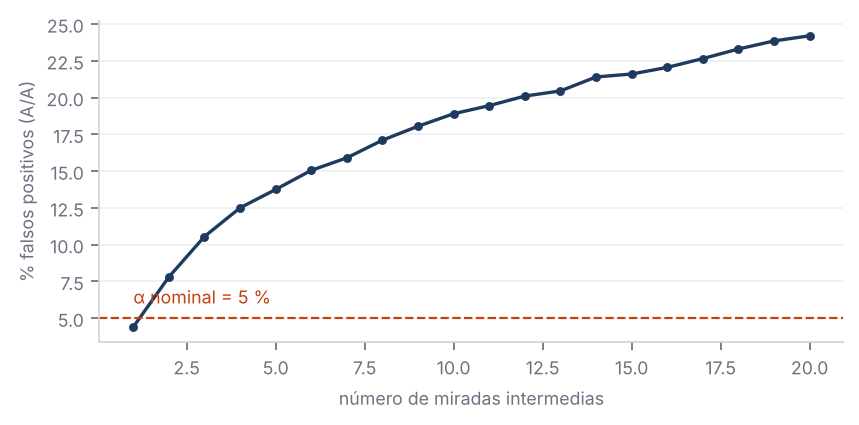

Con una conversión base del 8 % y un efecto mínimo de interés de +1 p.p. (α = 5 %, potencia 80 %) se necesitan 12.208 usuarios por grupo. El experimento alcanzó 12.429 (A) y 12.571 (B). El test de Sample Ratio Mismatch (χ²) da p = 0,37: la asignación es coherente con 50/50, sin indicios de fallos de randomización.

z-test de dos proporciones: diferencia +0,73 p.p., IC 95 % [+0,03 p.p., +1,42 p.p.], z = 2,05, p = 0,040. Significativo al 5 %, aunque el límite inferior del intervalo está cerca de 0: el efecto es real pero su tamaño es incierto.
Modelo Beta-Binomial con prior uniforme Beta(1,1). P(B > A) = 98,0 %; IC creíble 95 % del lift relativo [+0,4 %, +18,0 %]. Pérdida esperada eligiendo B: 0,003 p.p.; eligiendo A: 0,728 p.p. La pérdida esperada es más útil para negocio que el p-valor porque mide cuánto se arriesga con cada decisión.

El ingreso tiene muchos ceros y una cola larga, así que la t de Welch se complementa con un IC bootstrap (4.000 remuestreos). Media A 5,43 € vs B 5,48 €; diferencia 0,05 €, IC bootstrap [-0,51, 0,64] €, p (Welch) = 0,86. No concluyente: el intervalo es compatible tanto con pérdidas como con ganancias. Con la varianza del ticket, detectar +1 % en ingreso exigiría muchos más usuarios.

Al mirar varios segmentos aumenta la probabilidad de encontrar un falso positivo, así que los p-valores se ajustan con Holm-Bonferroni.
| Segmento | Usuarios | A | B | Dif. | IC 95 % | p | p Holm |
|---|---|---|---|---|---|---|---|
| Escritorio | 9.306 | 9,24 % | 9,39 % | +0,15 p.p. | [-1,03 p.p., +1,34 p.p.] | 0,798 | 0,798 |
| Móvil | 15.694 | 7,63 % | 8,70 % | +1,07 p.p. | [+0,22 p.p., +1,93 p.p.] | 0,014 | 0,028 |
En móvil el efecto es +1,07 p.p. y sigue siendo significativo tras el ajuste (p Holm = 0,028). En escritorio (+0,15 p.p.) no se distingue de cero. Hipótesis: el rediseño reduce fricción sobre todo en pantallas pequeñas.

Simulación de 2.000 tests A/A (sin efecto real). Con un único análisis al final, la tasa de falsos positivos es 4,7 %, como se espera. Si se revisa el p-valor en 20 momentos y se para en cuanto p < 0,05, sube a 24,2 %. Por eso este experimento se analizó una sola vez, con el tamaño muestral fijado de antemano. Si se quiere monitorizar durante el test, hay que usar métodos secuenciales (por ejemplo, O'Brien-Fleming).
